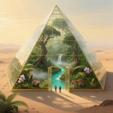
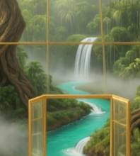
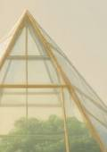

Relationship — A huge glass greenhouse shaped like the Great Pyramid of Giza contains
A huge glass greenhouse shaped like the Great Pyramid of Giza contains a complete and miniature Amazon rainforest ecosystem, and the overall surrealist style.

Judge — Direct
- PASSRelationship - Inclusion — The image shows a large glass greenhouse structure. Inside the transparent walls of the greenhouse, a dense collection of green, tropical plants and trees is visible, representing a rainforest ecosystem contained within the structure.
- FAILStyle — The image is rendered in a photorealistic style. The lighting, textures, and depiction of the objects are natural and realistic, lacking the dream-like, distorted, or bizarre visual qualities characteristic of the surrealist style.
- PASSWorld Knowledge — The image depicts a central structure shaped like a pyramid, and two stone pyramids are visible in the background, all of which are consistent with the form of the Great Pyramid of Giza. The vegetation shown, both inside and outside the greenhouse, is dense and tropical with various types of trees and plants, which is visually representative of an Amazon rainforest.
- PASSRelationship - Similarity — The central structure in the image is a greenhouse made of glass panes and a metal frame. This greenhouse is constructed in the shape of a pyramid with a square base and four triangular faces, making it visually similar in shape to the Great Pyramid of Giza.
Judge — Continuum
- PASSRelationship - Inclusion — The image displays a large, pyramid-shaped glass greenhouse. Inside this structure is a vibrant ecosystem with lush green trees, plants, a river, a waterfall, and several animals including a parrot, a capybara, and a jaguar, which collectively represent an Amazon rainforest ecosystem.
- PASSStyle — The image portrays a surreal concept by depicting a self-contained, lush rainforest ecosystem thriving inside a glass pyramid structure that is situated in the middle of a vast, arid desert. This illogical juxtaposition of environments creates a dream-like and fantastical scene, which is characteristic of the surrealist style.
- PASSWorld Knowledge — The image correctly incorporates the required world knowledge. The structure is a large, four-sided pyramid, clearly referencing the shape of the Great Pyramid of Giza. The ecosystem within contains features and wildlife characteristic of the Amazon rainforest, such as dense tropical trees, a river, a waterfall, a macaw, a capybara, and a jaguar.
- PASSRelationship - Similarity — The image shows a large greenhouse constructed with glass panels and a golden frame. The overall form of this greenhouse is a four-sided pyramid with a square base, which is visually similar to the iconic shape of the Great Pyramid of Giza.
What the agent did
Thinking
The user is asking for a surreal image: a giant glass greenhouse shaped like the Great Pyramid of Giza containing a miniature Amazon rainforest ecosystem. Surrealist style. Let's generate this with qwen-image. First, write a good prompt. Prompt: "Surrealist digital painting of a giant transparent glass pyramid in the shape of the Great Pyramid of Giza, standing in a barren desert plain. Inside the pyramid is a complete miniature Amazon rainforest ecosystem: dense emerald-green canopy, twisted giant trees, a meandering turquoise river, tiny waterfalls, mist, exotic plants, and small creatures. A sense of scale conveyed by tiny human figures at the entrance. Surrealist dreamlike atmosphere, golden-hour light, reflections on the glass, soft haze, high detail, wide shot showing the entire pyramid." Size: probably landscape 1024x768? The harness controls the size, but width/height can be set in generate_image. The default is 1024x1024. Since it's a pyramid scene, landscape might be better. Let's do 1344x768 or 1024x1024. The benchmark says "image size is fixed for comparison"—so maybe I should keep the default 1024x1024. The instructions say "do not set seeds. Size and seed are controlled by the harness." So I shouldn't override width/height. I'll leave it at the default. Let's generate it.
Step 1 — `generate_image`
{
"prompt": "Surrealist digital painting, wide shot: a colossal transparent glass greenhouse shaped exactly like the Great Pyramid of Giza, its glass panels edged in thin golden frames, standing on a barren pale desert plain at golden hour. Inside the pyramid glows a complete miniature Amazon rainforest ecosystem: a dense emerald jungle canopy, twisted ancient trees, a winding turquoise river with tiny waterfalls, layers of mist and humidity, exotic orchids and giant ferns, small macaws, capybaras and jaguars visible among the foliage. Tiny human figures stand at the pyramid's entrance, emphasizing immense scale. Dreamlike surrealist atmosphere, soft haze, warm light refracting through the glass, reflections, long shadows, rich detail, museum-quality fantastical art.",
"model": "qwen-image"
}Result img_0

Thinking
The first generation result is already very good. Let me check: - Giant glass greenhouse shaped like the Great Pyramid of Giza ✓ - Inside contains a miniature Amazon rainforest ✓ (jungle canopy, rivers, waterfalls, mist) - Surreal style ✓ - Sense of scale provided by tiny human figures ✓ - Animals: macaws, capybaras, jaguars ✓ Issues I can see: - The "jaguar" actually looks a bit like a spotted feline, but that's fine. - The capybara is also fine. - The pyramid shape is good, and the glass panels and gold frames are good too. - The opening/entrance doors are open, with the river flowing through — nice surreal touch. - Overall very good. Let me use inspect_region to check details like the apex and the figures. Actually, the image already looks pretty polished. Maybe I should check the small text — no text was requested. The style is surrealist and dreamlike — yes. Minor point: the left side of the pyramid looks slightly transparent and faded, and the desert background is a bit plain, but that's fine for the style. Should I edit? The result matches the prompt well. The quality is high. Probably I can mark this as the best. Maybe check the details of the figures and the jaguar's face. Let me quickly inspect a region of the center to check the figures and the entrance.
Model
The first generation is already very close to the brief. Let me zoom in on key details to verify quality before deciding.
Step 2 — `inspect_region`
{
"image": "img_0",
"roi": [
380,
420,
650,
720
]
}Result img_1

Step 3 — `inspect_region`
{
"image": "img_0",
"roi": [
480,
30,
600,
200
]
}Result img_2

Thinking
Checking the details: - Central section: glass pyramid with gold framing, interior rainforest with waterfalls, turquoise rivers, mist, open golden doors, tiny human figures — all rendered cleanly. - Apex (tip of the mountain): the pyramid's apex is clean, the glass is semi-transparent, and the interior canopy is visible through it. Everything matches: a giant glass greenhouse in the shape of the Great Pyramid, a miniature Amazon rainforest inside, a surreal dreamlike style. The quality is high, and the composition is good too. No rendered text that needs to be verified. This is a strong result. Marking img_0 as the best and stopping — no need to chase after minor improvements.
Model
Upon zooming in, I can confirm that the image is well crafted: the gold-framed glass pyramid is rendered cleanly up to its apex, and the interior rainforest features waterfalls, a winding turquoise river, misty canopy layers, and a surreal open golden door through which a tiny human figure stands for scale. All the requested elements are present — the Great Pyramid-shaped glass greenhouse, the complete miniature Amazon ecosystem (jungle canopy, rivers, waterfalls, orchids, macaws, capybaras, jaguars), and a dreamlike surrealist atmosphere. Marking this as the best result.
Step 4 — `mark_best`
{
"image": "img_0",
"reason": "Meets the full brief: colossal glass pyramid greenhouse shaped like the Great Pyramid of Giza containing a complete miniature Amazon rainforest (canopy, river, waterfall, mist, exotic flora and fauna), surrealist dreamlike golden-hour style with tiny figures for scale; details verified at crop resolution."
}Thinking
Complete. Final result is img_0, marked as best. Stopping here.
Model
The image is complete and marked as the final result. It depicts a colossal glass greenhouse in the exact shape of the Great Pyramid of Giza, its golden-framed glass panels revealing a complete miniature Amazon rainforest within — a dense emerald canopy, a winding turquoise river with a waterfall, layers of mist, exotic orchids, and wildlife including macaws, a capybara, and a jaguar. Two tiny human figures stand at the open golden entrance, emphasizing the immense scale, all bathed in a warm golden-hour light for a dreamlike surrealist atmosphere.